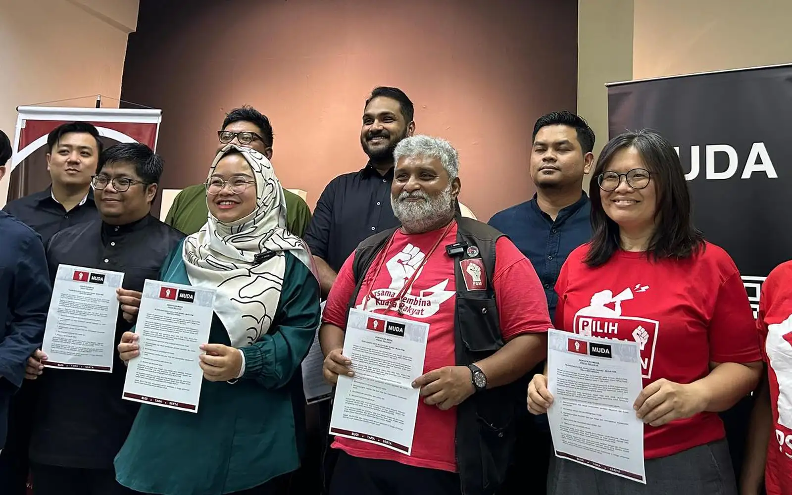
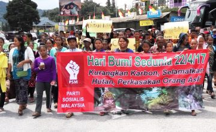
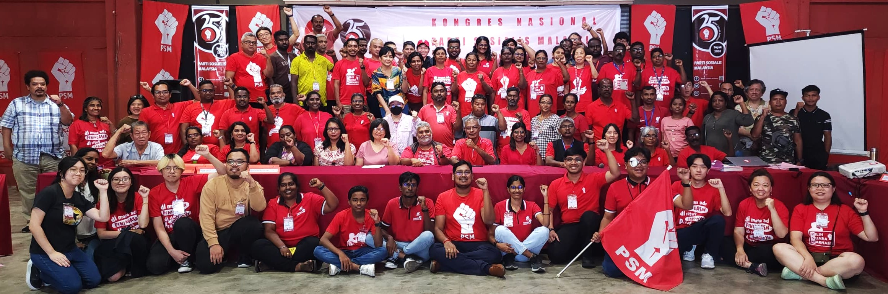
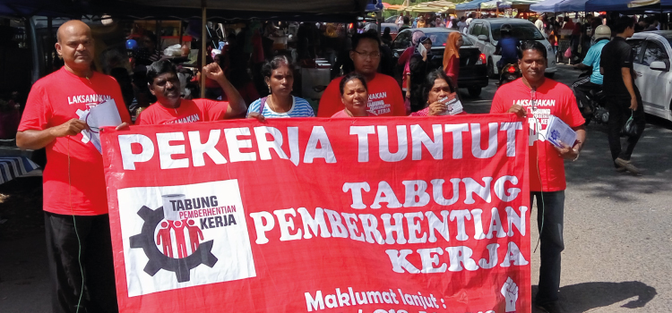

Barisan Progresif

Home
About Us
Activities
Community
FOR A BRIGHTER MALAYSIA
Our Movement in Action

Community event led by Barisan Progresif in Penang.

Empowering youth through education and engagement.

Environmental clean-up initiative organized by volunteers.